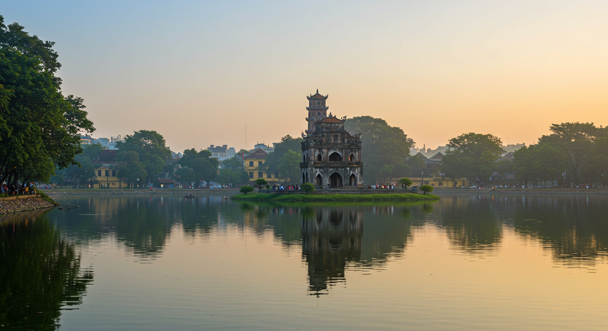
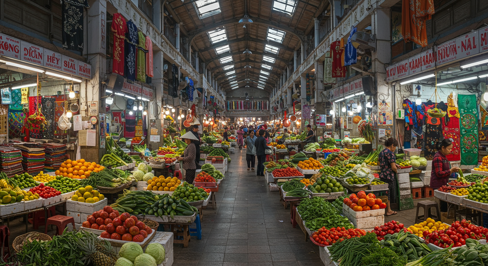
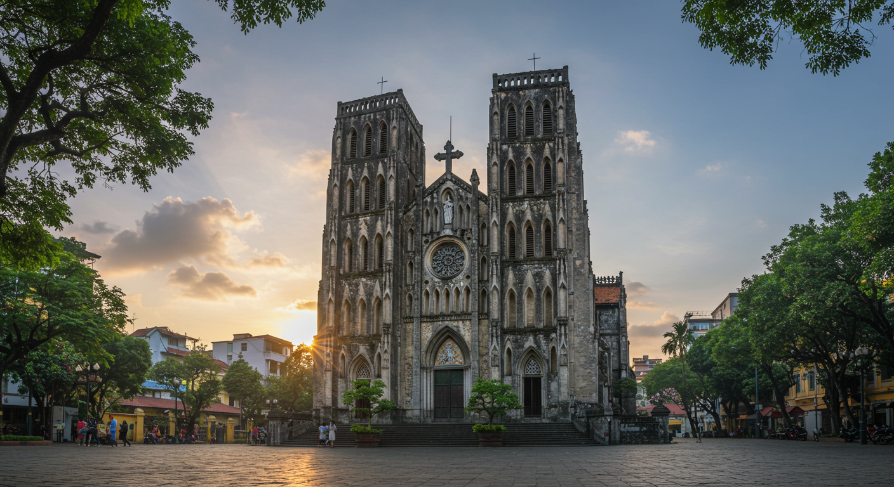
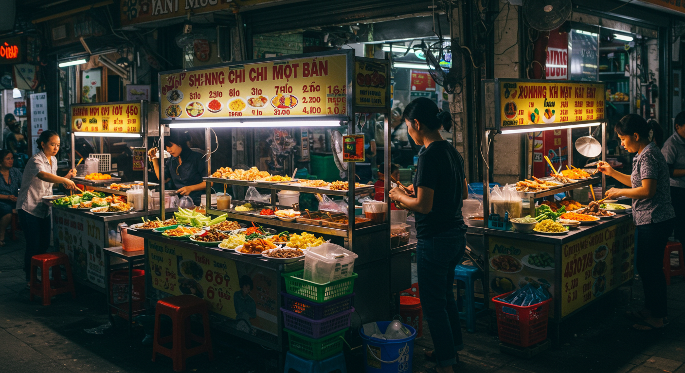

NomadVN에 대해
베트남 여행을 더욱 특별하게 만들어드리는 여행 가이드
우리의 미션
NomadVN은 베트남을 방문하는 모든 여행자들이 현지의 진정한 매력을 경험할 수 있도록 돕는 것을 목표로 합니다. 단순한 관광지 소개를 넘어서, 현지 문화와 생활을 이해할 수 있는 깊이 있는 정보를 제공합니다.
우리의 비전
베트남 여행을 더욱 의미 있고 잊을 수 없는 경험으로 만들어, 여행자들이 이 아름다운 나라의 진정한 가치를 발견할 수 있도록 돕는 것입니다. 우리는 지속적으로 업데이트되는 정보와 실제 경험을 바탕으로 한 신뢰할 수 있는 가이드를 제공합니다.
우리의 팀
베트남 현지에 거주하는 여행 전문가들과 실제 여행 경험을 가진 여행자들로 구성된 팀입니다. 다양한 관점과 경험을 바탕으로 포괄적이고 실용적인 여행 정보를 제공합니다.
우리가 제공하는 서비스

상세한 지도
주요 관광지와 숨겨진 명소까지 상세한 지도 정보
최적의 일정
여행 기간과 예산에 맞는 맞춤형 여행 일정

언어 가이드
현지인과 소통할 수 있는 베트남어 기본 표현

안전 정보
여행 중 안전을 위한 실용적인 팁과 주의사항
문의하기
베트남 여행에 대한 궁금한 점이나 특별한 요청사항이 있으시면 언제든 연락주세요.
info@nomadvn.com
+84 123 456 789